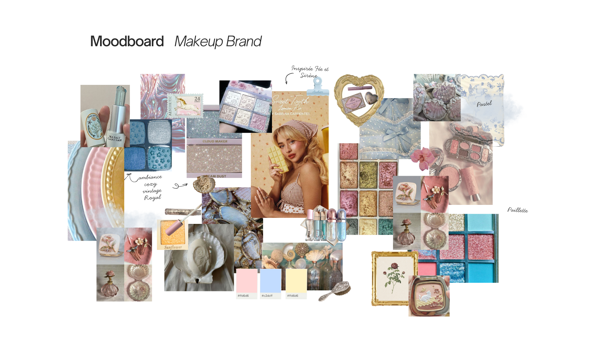
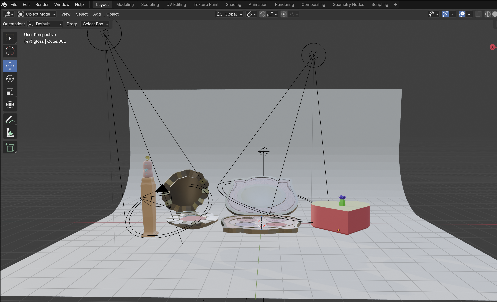
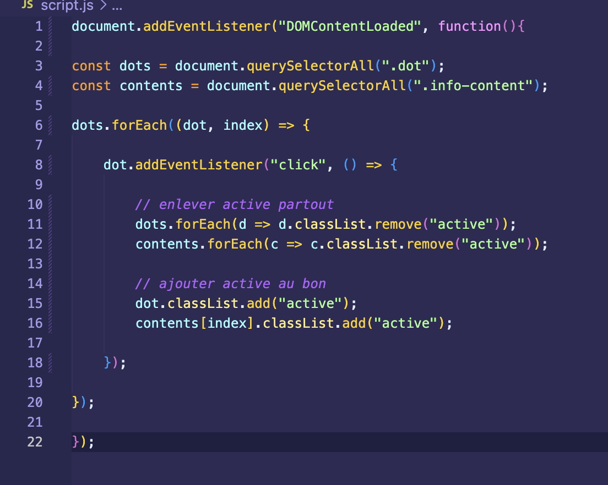
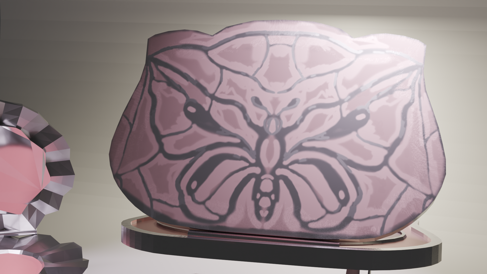

Chronologie du projet
Recherche d’inspiration visuelle sur Pinterest, les tendances maquillage et des marques comme REM Beauty. Définition d’un univers féerique, nacré et pastel.

Création des formes des produits dans Blender : contenants, capuchons et éléments décoratifs.

Ajout des matériaux et textures dans Substance Painter pour créer un effet brillant, argenté et réaliste en ajoutant plusieurs détails.

Création du site web en HTML, CSS et JavaScript pour présenter la marque et les produits. La timeline interactive permet d’expliquer les étapes du projet.

Retour dans Blender pour appliquer les textures finales et réaliser les rendus visuels des produits.


Produit inspiré des coquillages et de l’univers marin. La forme arrondie et les matériaux nacrés rappellent l’esthétique des perles et des sirènes. Difficultés: Créer une forme organique fluide dans Blender et ajuster les matériaux nacrés dans Substance Painter.